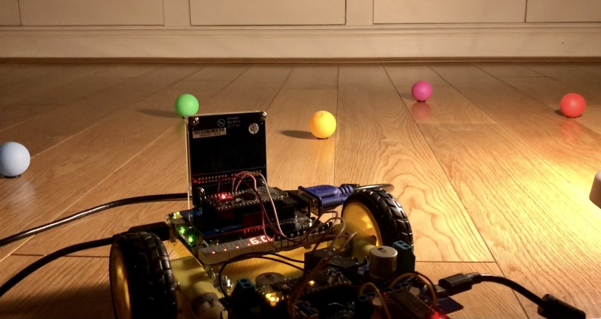

Projects
Mars Rover - June 2021

The Mars Rover is developed as part of Year 2 summer group project module at Imperial College London.
This project sees the development of an autonomous mars rover which has the capability to navigate and map a terrain with obstacles of numerous types. The project was composed of several subsystems that communicate between each other to process and display data. Each subsystem can be created separately and utilised the skills of the team to reach a suitable product. The final product is a rover that can follow both user input commands and calculated path commands based on orientation, speed, and current location. New obstacles can be identified, and existing obstacles can be avoided, and this information is displayed on a dashboard hosted on the internet. There is also a character-based code to minimise transmission errors.
For the integration module that I was in charged of, I carried out point-to-point integration and the star integration methods to test the connection between subsystems.
Access the full report here.